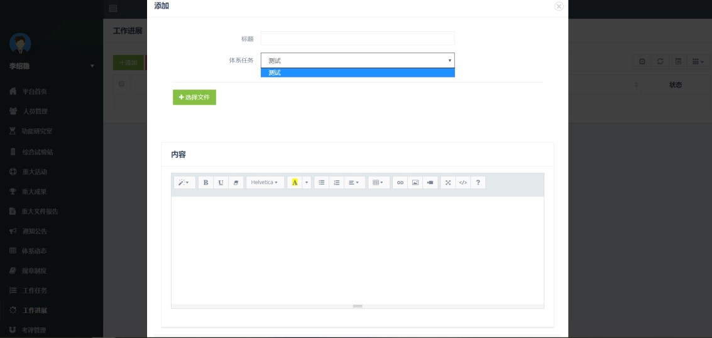

体系平台使用手册
平台首页
图1 平台首页
平台整体分为两个区域，如图1所示：
●区域1为相关菜单，点击链接后，在区域2中打开对应链接的内容；
●区域2是主体显示区域，显示主界面。
体系简介

图2 各体系简介
体系简介页面：
●点击十五个体系展示轮播的链接，可进入相应体系的展示页面，体系详情分为：体系简介、人员名单、功能研究室、综合试验站、产业概况。
●体系办和各体系首席专家，分别有权限对所有和各自体系修改基本信息。
人员管理

图3 人员管理
●体系办、首席点击“人员管理”，可显示相应的人员名单。如图3所示。
●体系办点击“人员管理”，可显示所有人员，并可添加人员。
●各首席专家点击“人员管理”，可显示本体系所有人员。
功能研究室
图4 功能研究室
●点击“功能研究室”菜单项，可显示相应的功能研究室，如图4所示。
●体系办点击“功能研究室”菜单项，可显示所有功能研究室。
●首席点击“功能研究室”菜单项，可显示本体系功能研究室，并可添加功能研究室。
综合试验站

图5 综合试验站
●点击“综合试验站”菜单项，可显示相应的综合试验站，如图5所示。
●体系办点击“综合试验站”菜单项，可显示所有综合试验站。
●首席点击“综合试验站”菜单项，可显示本体系综合试验站，并可添加综合实验站。
重大活动

图6 首席专家发布重大活动页面
●点击“重大活动”后，可显示相应的重大活动
●体系办点击“重大活动”后，可显示所有的重大活动，添加重大活动，删除本账号发布的重大活动，修改所有账号发布的重大活动，通过重大活动
●首席点击“重大活动”后，可显示本账号发布的和其他通过的重大活动，添加和修改重大活动，
●其他用户点击“重大活动”后，可显示本体系和体系办通过的重大活动
重大成果

图7 首席专家发布重大成果页面
●点击“重大成果”后，可显示相应的重大成果
●体系办点击“重大成果”后，可显示所有的重大成果，添加重大成果，删除本账号发布的重大成果，修改所有账号发布的重大成果，通过重大成果
●首席点击“重大成果”后，可显示本账号发布的和其他通过的重大成果，添加和修改重大成果，
●其他用户点击“重大成果”后，可显示本体系和体系办通过的重大成果
重大文件报告
图8 首席专家发布重大文件报告页面
●点击“重大文件报告”后，可显示相应的重大文件报告
●体系办点击“重大文件报告”后，可显示所有的重大文件报告，添加重大文件报告，删除本账号发布的重大文件报告，修改所有账号发布的重大文件报告，通过重大文件报告
●首席点击“重大文件报告”后，可显示本账号发布的和其他通过的重大文件报告，添加和修改重大文件报告，
●其他用户点击“重大文件报告”后，可显示本体系和体系办通过的重大文件报告
通知公告
图9 首席专家发布通知公告页面
●点击“通知公告”后，可显示相应的通知公告
●体系办点击“通知公告”后，可显示所有的通知公告，可对所有体系的所有通知公告进行增，删（只可删除本人的），改，通过操作
●首席点击“通知公告”后，可显示通过的、本体系发布的所有通知公告，可增加，删除（本体系发布的本体系的通知，），修改（同删除），发布需一级审核
●其他用户点击“通知公告”后，可显示省体系通过的，本体系通过的（包括编辑者为省体系或是本体系主席两种情况）通知公告
体系动态
图10 首席专家审核体系动态页面
点击“体系动态”菜单项，展示的是省体系办以及各产业体系发布的一些重大研究进展、媒体宣传、会议活动、培训服务等。
●体系动态所有岗位专家及综合试验站站长均可发布，本体系中所有人员发布的动态都由该体系的首席专家审核（包括首席专家自己发布的），如图10所示。
●审核通过之后本体系的所有人员均可见； 但是若是农委“展示”之后，则所有体系的人员均可见，否则仅有发布的该体系人员可见。
●点击体系动态的标题，即可查看该体系动态的详细信息。因为权限的不同，用户所能看到的体系动态不同。
规章制度

图11 首席专家发布本体系规章制度后显示审核中
点击“规章制度”菜单项，展示的分别是体系办和各体系发布的各项制度办法，包括资金管理办法、信用管理办法、考评办法等。
●省体系发布规章制度由其自己审核“通过”即可，且所有体系人员均可见省体系规章制度，如图11所示。
●各体系规章制度由该体系的首席专家发布本体系的相关规章制度，农委“审核”。若是农委审核选择“通过”按钮，则只有发布的其体系内所有人员可见；若是选择“展示”按钮，则所有体系的所有人员均可见。
●点击相关规章制度的标题，即可查看该规章制度的详细信息。
工作任务

图12 首席专家在“细化安排”中发布子任务
点击“工作任务”菜单项，因为用户权限的不同，所显示的工作任务也有所不同。
●由农委发布各个体系的“任务合同”（即总任务），各体系首席专家对本体系的工作任务进行“细化安排”（分配到体系内各个人员的子任务）（如图12所示）， 该体系的各个人员执行本体系首席专家所派遣的任务。
工作进展

图13.1 无子任务时的页面
图13.2 首席专家审核通过后的子任务
点击“工作进展”菜单项，由被安排子任务的人员发布自己的进展状况（点击“添加”按钮），没有子任务则其下拉列表为空
●本体系的首席专家有“审核”权利，审核“通过”之后，本体系人员以及农委可见。如图13.2所示。
考评管理

图14 考评管理页面
考评管理页面分为三个子页面，分别为“考评启动”、“打分系统”、“个人得分”，如图14所示。
考评启动
●体系办可显示所有"考评启动"，添加对正副首席的“考评启动"，修改本账号添加但未结束的“考评启动”权重，修改本人添加的“考评启动”状态
●首席专家可显示所有"考评启动"，添加本体系正副首席人员以外人员的“考评启动"，修改本账号添加但未结束的“考评启动”权重，修改本人添加的“考评启动”状态
●其他用户可显示所有"考评启动"
打分系统
●所有人可显示本人需要打分的打分项
考评汇总
●体系办显示各正副首席的得分情况
●首席专家上方表格为本体系其他人员得分，下方为本人得分
●其他用户显示个人得分情况
下载中心

图15 下载中心页面
点击“下载中心”菜单项，下载中心，供各位专家下载通知公告、体系动态以及规章制度等，如图15所示。
●点击文件名即可下载。
个人中心

图16 个人中心页面
点击“个人中心”菜单项，如图16所示。
●个人可以对本人的基本信息进行相关的修改操作，体系办可修改所有人岗位、权限、基本信息